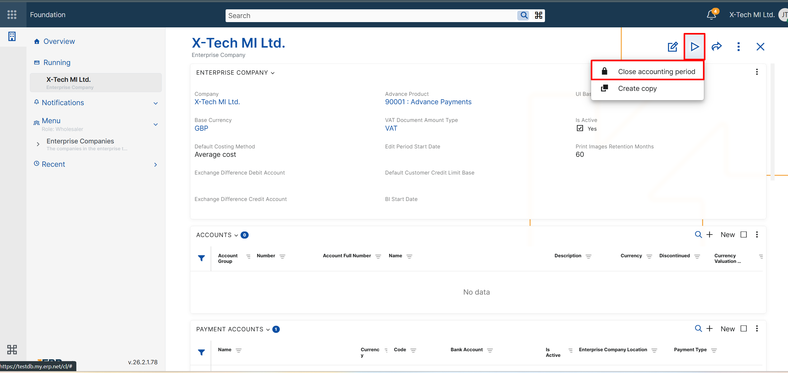

Accounting
Notable features
1.Transfer Orders: Line-level posting using calculated attributes
Accounting templates for Transfer Orders now support a new Amount source:
- Transfer Orders – Lines
When this source is selected, the Amount on field can reference a calculated attribute defined for transfer order lines. This enables line-level posting, where the posted amount is derived per line via calculated attributes. A common use case is posting additional amounts (e.g. transport and other costs) that are allocated and calculated per line, so the distributed amounts can be posted to different accounts depending on the line context (e.g. product type) — a common requirement for SAF-T aligned charts of accounts.
Typical use case
- You enter additional amounts (transport/overheads) for a transfer order.
- You need the distributed portion of these amounts to be posted per line to the correct accounts (e.g. separate accounts for goods/materials/finished goods), without requiring users to split transfer orders by product type.
How it works
- Define calculated attributes for Transfer Order Lines to calculate the desired line-level amount (e.g. allocated transport).
- In the accounting template for the transfer order, set:
- Amount source = Transfer Orders – Lines
- Amount on = the relevant line calculated attribute
- optionally, use Amount Source Filter to limit which transfer order lines are included in the posting, for example by Product Type
- The generated postings can now reflect the distributed amounts per line.
2.Enterprise Companies: Close accounting period
A new UI function, Close accounting period, is now available in the definition of each Enterprise Company in both the Web Client and the Desktop Client.
This function helps users close accounting periods in a safer and more controlled way. It automatically closes eligible accounting vouchers for the selected enterprise company by changing their state from Released or Completed to Closed. At the same time, it updates the End Date Of Closed Accounting Period field in the Enterprise Company definition.
To ensure a consistent month-by-month process, the closing date cannot be entered manually. The system automatically suggests the next valid date:
- If no period has been closed yet, the suggested date is the last day of the previous calendar month.
- If a period has already been closed, the suggested date is the last day of the next calendar month after the last closed period, but never later than the last day of the previous month.
If there are no vouchers to close for the suggested period, the system still updates the closed-period end date. This allows companies to advance the closed accounting period consistently, month by month.
For more details about the closing logic and eligibility conditions, see Close accounting period.
